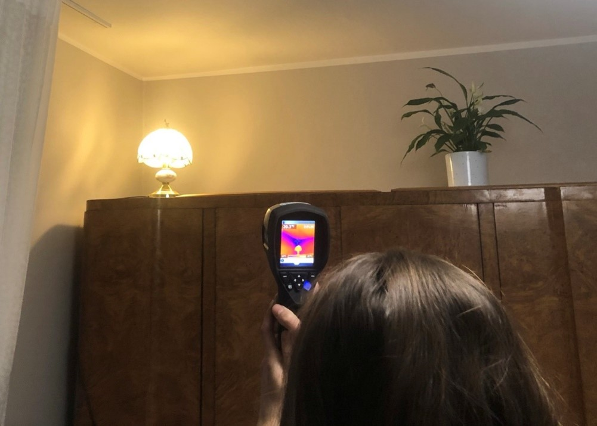
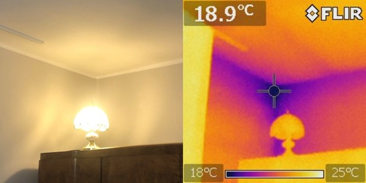
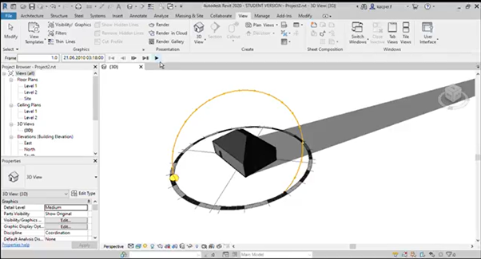
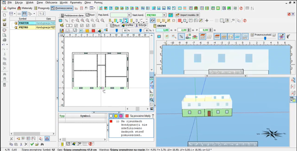

Po roku przerwy związanym z pandemią udało nam się wziąć udział w 24. Edycji Pikniku Naukowego, organizowanego przez Centrum Nauki Kopernik oraz Polkie Radio. Jednak była to dość nietypowa edycja, gdyż wszystko zostało przeniesione do przestrzeni internetowej.
Tematem tegorocznego pikniku był „Klimat i my”, co w naszym przypadku wiązało się z szerszym spojrzeniem na relacje pomiędzy klimatem oraz branżą budowlaną. Warto zwrócić uwagę, że sektor budowlany jest jednym z największych emitentów CO2 , dlatego tak ważne jest racjonalne podejście do projektowania oparte na zasadzie zrównoważonego rozwoju.
Ujęcie z kamery termowizyjnej.
W ramach kolejnej edycji pikniku, nagraliśmy film skierowany zarówno do dzieci jak i starszych odbiorców, przybliżający tematykę wpływu budownictwa na klimat. Skupiliśmy się przede wszystkim na pokazaniu w jaki sposób powstają straty ciepła w budynku. Wykorzystaliśmy kamerę temowizyjną, która pozwoliła nam zbadać temperatury różnych obiektów, pokazać miejsca najbardziej narżone na utratę ciepła oraz istniejące rozwiązania.

Rejestracja ciepła kamerą termowizyjną

Rezultat pomiaru
Nieco starsi odbiorcy również znajdą coś dla siebie. W dalszej części filmu zaprezentowaliśmy programy wspomagające zrównoważone projektowanie. Umożliwiają one wykonanie analizy energetycznej budynku, zbadanie jego nasłonecznienia czy też dobranie paneli fotowoltaicznych. Z pomocą tych narzędzi możemy w dość prosty sposób wykryć potencjalne oszczędności w zużyciu energii i kosztach użytkowania.

Widok z modelu Revit wspomagany wtyczką Insight

Widok z Audytor OZC
Efekty naszej pracy możecie zobaczyć w poniższym filmiku.
https://www.youtube.com/watch?v=TEXW-XCIjF8.